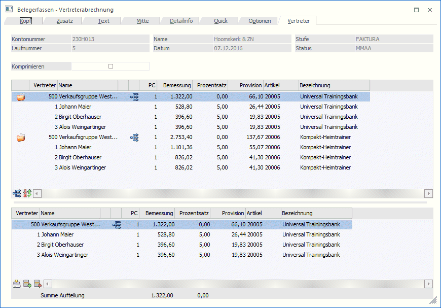
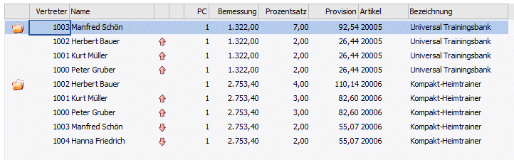
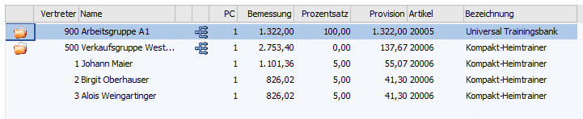
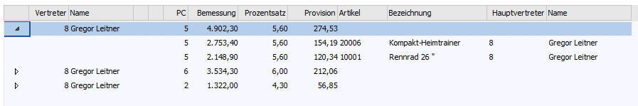
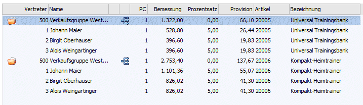
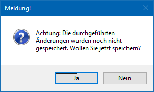

Im Register "Vertreter" werden alle Vertreterjournalzeilen angezeigt, die beim Drucken einer Faktura erstellt werden. Je nach Einstellung in den FAKT-Parametern (auf Provisionscode komprimieren; Zeilen mit 0 Prozentsatz erzeugen) kann die Anzeige unterschiedlich sein.
Handelt es sich bei den Vertreterzeilen um Vertretergruppen (inkl. oder exkl. sofortiger Aufteilung) so wird auf den Gültigkeitszeitraum (lt. Vertreterstamm) in Bezug auf das angegebene Belegdatum geprüft und diese Werte angezeigt. Ist lt. Einstellung in den FAKT-Parametern als Basis für die Vertreteraufteilung das Lieferdatum, so wird die endgültige Aufteilung - lt. Gültigkeitsbereich - erst beim Drucken des Beleges durchgeführt.
Achtung
Werden Zeilen in diesem Fall editiert, so werden diese Zeilen beim Drucken des Beleges NICHT mehr geändert!
Weiteres können in diesem Register manuelle Änderungen im Bereich "Bemessung", "Provisionsprozentsatz" oder "Provisionsbetrag" durchgeführt werden.
Hinweis
Weitere Informationen bezüglich des Erfassens von Belegen und den Buttons des Programms "Belegerfassen" sind dem Kapitel Belegerfassen zu entnehmen.

Obere Tabelle
In der oberen Tabelle werden neben dem Vertreternamen die Informationen über Bemessung, Provisionscode, Prozentsatz, Provision, Artikel, usw. angezeigt.
Handelt es sich beim verwendeten Vertreter um einen Vertreter der die Hierarchiestufen verwendet, und hat dieser im Vertreterstamm die Optionen "Bottom-Up-Provision" und/oder "Top-Down-Provision" aktiviert (d.h. die untergeordneten Vertreter bzw. die übergeordneten Vertreter erhalten ebenfalls eine Provision), so werden die weiteren Vertreter inkl. entsprechenden Symbolen in der Tabelle angezeigt:

Im Stamm einer Vertretergruppe besteht die Möglichkeit festzulegen, dass die Vertretergruppe bereits beim Druck der Faktura und nicht erst nachträglich aufgeteilt werden soll.
Wird diese Einstellung verwendet so werden in dieser Tabelle auch jene Vertretergruppen mit eigenem Symbol angezeigt, die bereits aufgeteilt wurden (die eigentlichen, aufgeteilten Vertreter mit den jeweiligen Provisionen werden ebenso angezeigt):

Hinweis
Beim Auflösen von Vertretergruppen werden zuerst alle Vertreter mit Fixbeträgen eingefügt und deren Beträge von der aufzuteilenden Summe abgezogen. Die restliche Provision wird dann auf die Vertreter mit Prozentsätzen/Verhältniszahlen aufgeteilt. Dabei kann diese auch negativ werden, wenn die Fixbeträge größer als die Provisionssumme sind.
Ø Komprimieren
Die Option "Komprimieren" wird mit der Einstellung aus den FAKT-Parametern "auf Provisionscode komprimieren" vorbelegt. D.h. ist in den FAKT-Parametern diese Einstellung getroffen, so wird diese Option aktiviert.
Je nach Einstellung werden nun die Zeilen in der Tabelle entsprechend angezeigt:
ü Komprimierte Anzeige
Die Zeilen
werden in einer Baumstruktur angezeigt. Beim Doppelklick auf das entsprechende
Symbol werden alle zugehörigen Zeilen angezeigt.

ü Unkomprimierte Anzeige
Für jede
Artikelzeile wird eine Zeile angezeigt. Beim Doppelklick auf das Ordnersymbol
werden die zugehörigen Zeilen von Gruppen, Hauptvertretern etc.
angezeigt.

Achtung
Diese Option dient nur der Anzeige im Belegerfassen. Beim Drucken des Beleges werden die Zeilen immer entsprechend der Einstellung in den Fakt-Parametern in das Vertreterjournal eingefügt!
Tabellenbuttons - oberen Tabelle
Ø Zeilen expandieren
Wird die Anzeige der Tabelle komprimiert ausgeführt, so können mittels dieses Buttons die Zeilen auf die Einzelzeilen ausgedehnt bzw. wieder "komprimiert" werden.
Ø originale Provisionierung wiederherstellen
Mit Hilfe dieses Buttons können die in der unteren Tabelle durchgeführten Änderungen wieder zurückgesetzt werden.
Ø Ausgabe Excel
Durch Anwahl des Buttons "Ausgabe Excel" wird der Inhalt der Tabelle nach Microsoft Excel übergeben.
Ø Tabelleneinstellungen speichern
Die Spalten einer Tabelle können grundsätzlich an beliebige Positionen verschoben, bzw. in der Breite entsprechend angepasst werden. Durch Anwahl des Buttons "Tabelleneinstellungen speichern" werden die Einstellungen benutzerspezifisch gespeichert und bei dem nächsten Aufruf des Programmpunktes wieder vorgeschlagen.
Ø Gesamteinstellungen speichern…
Im Gegensatz zu "Tabelleneinstellungen speichern" können mit "Gesamteinstellungen speichern" mehrere Tabellenaufbauten gespeichert und nach Wunsch geladen werden. Zusätzlich werden Sonderfunktionen der Tabelle (z.B. "Spalte gruppieren") ebenfalls bei der Speicherung bedacht.
Untere Tabelle
Wird in der oberen Tabelle eine Vertreterjournalzeile angewählt, so werden in der unteren Tabelle ebenfalls die Einzelzeilen zu einer Vertreterjournalzeile angezeigt.
Nur in dieser Tabelle und nur in der Stufe "Faktura" können die Werte wie "Prozentsatz", "Bemessung", und "Provision" editiert werden.
In der Statuszeile der unteren Tabelle wird die Summe Aufteilung angezeigt, wobei im ersten Wert der bereits aufgeteilte Betrag ausgewiesen wird, in der zweiten Summe wird die Differenz zur Gruppensumme angezeigt. Damit kann bei einer manuellen Änderung immer geprüft werden, ob auch der gesamte Betrag aufgeteilt wurde.
Hinweis
Wird nach durchgeführten Änderungen die untere Tabelle verlassen ohne diese Änderungen gespeichert zu haben, erfolgt eine entsprechende Meldung:

Achtung
Werden manuelle Änderungen in der unteren Tabelle (in der Stufe "Faktura") durchgeführt, der Beleg aber anschließend nochmals in einer Stufe "Faktura" bearbeitet, so werden alle durchgeführten manuellen Änderungen gelöscht.
Wenn Änderungen in der Stufe "Faktura" durchgeführt wurden und anschließend in der Belegmitte vertreterabrechnungsrelevante Spalten, wie z.B. Menge, Preis, Vertreter, PC, usw. geändert werden, so werden alle durchgeführten manuellen Änderungen wieder zurückgesetzt.
Tabellenbuttons - untere Tabelle
Ø Änderungen speichern
Durch Drücken des Buttons "Änderungen speichern" können die Änderungen in der unteren Tabelle gespeichert werden.
Ø Zeilen einfügen
Durch Anwahl dieses Buttons können zusätzliche Zeilen in die Tabelle eingefügt werden.
Ø Zeilen entfernen
Durch Anwahl des Buttons "Zeile entfernen" können gesamte Zeilen aus der Tabelle entfernt werden.
Ø Ausgabe Excel
Durch Anwahl des Buttons "Ausgabe Excel" wird der Inhalt der Tabelle nach Microsoft Excel übergeben.
Ø Tabelleneinstellungen speichern
Die Spalten einer Tabelle können grundsätzlich an beliebige Positionen verschoben, bzw. in der Breite entsprechend angepasst werden. Durch Anwahl des Buttons "Tabelleneinstellungen speichern" werden die Einstellungen benutzerspezifisch gespeichert und bei dem nächsten Aufruf des Programmpunktes wieder vorgeschlagen.
Ø Gesamteinstellungen speichern…
Im Gegensatz zu "Tabelleneinstellungen speichern" können mit "Gesamteinstellungen speichern" mehrere Tabellenaufbauten gespeichert und nach Wunsch geladen werden. Zusätzlich werden Sonderfunktionen der Tabelle (z.B. "Spalte gruppieren") ebenfalls bei der Speicherung bedacht.